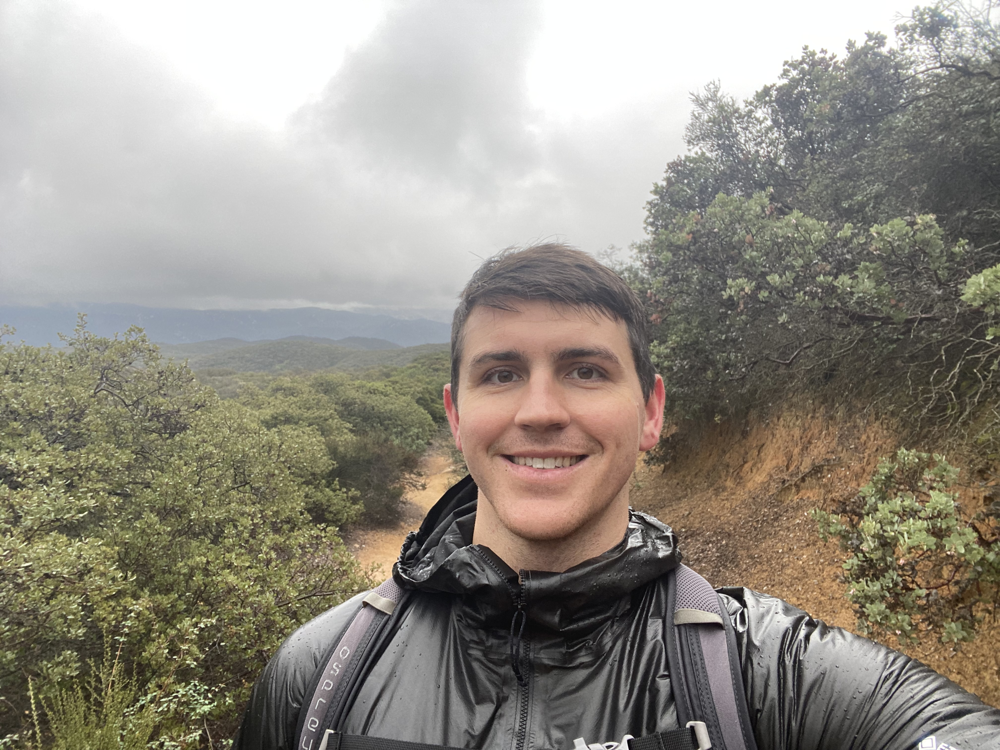

PhD Candidate at the University of California, Riverside
Thesis: Geometric Structures arising from SU(n+1,1)-Higgs Bundles
Geometric Structures arising from SU(2,1)-Higgs Bundles AMS 2024 Fall Western Sectional Meeting Special Session on Geometry, Topology and Dynamics of Character Varieties
What Are Connections? Graduate Student Seminar at UCR
The goal of this talk was to break down the complex idea of a connection into simple, multivariable calculus terms, and motivate it with clear examples for all graduate students